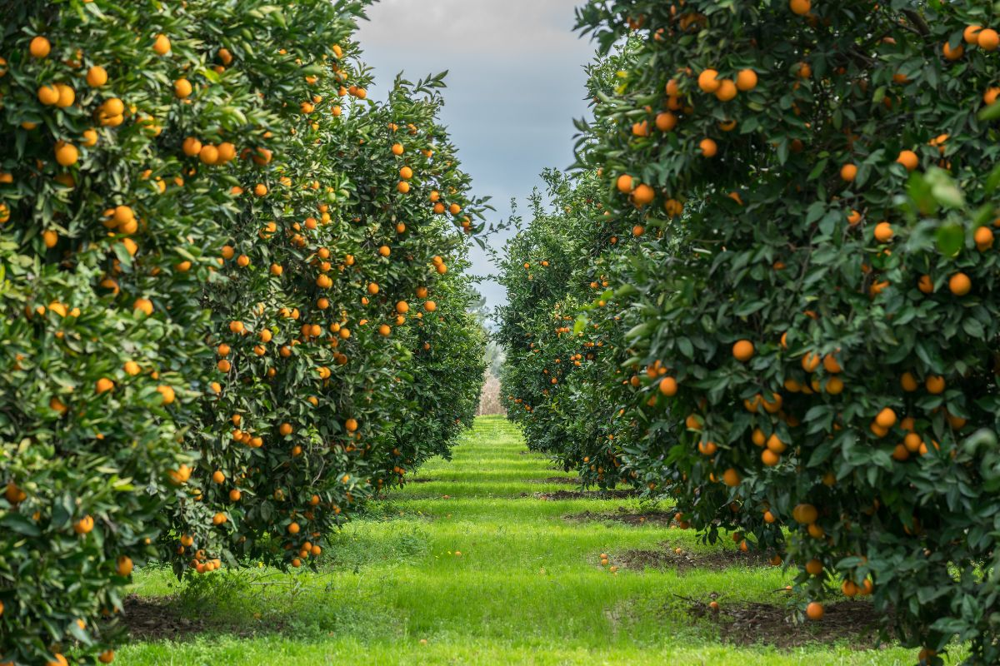
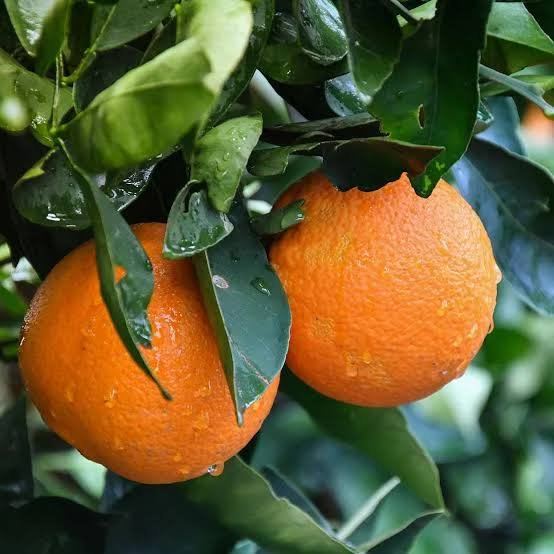
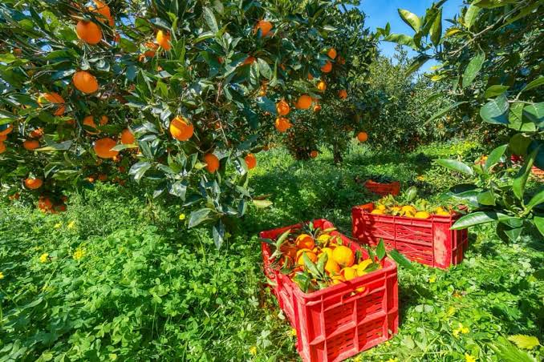

Orange Production
Usually covers around 1/2 acres of the farm.

- Time to fruit: 3-5 years(grafted).
- Soil Type: Deep, Well-Drained Loam,pH 5.5-6.5.
- Spacing: 5-6 m between trees.
- Fertilizer: Organic manure,NPK,magnesium and trace elements.
- Watering: Regular,especially in dry seasons.
- Yield: 300-800 fruits per mature tree anually.
Farm Gallery & Harvesting


